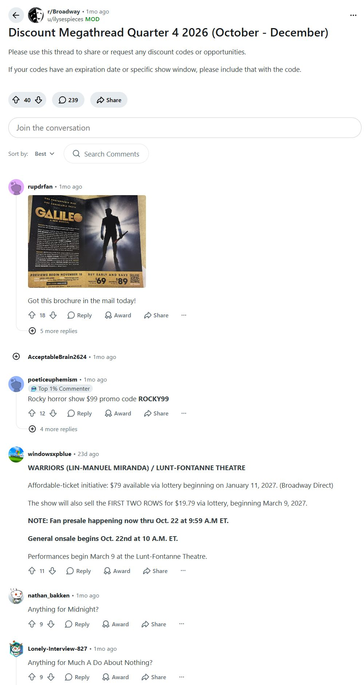
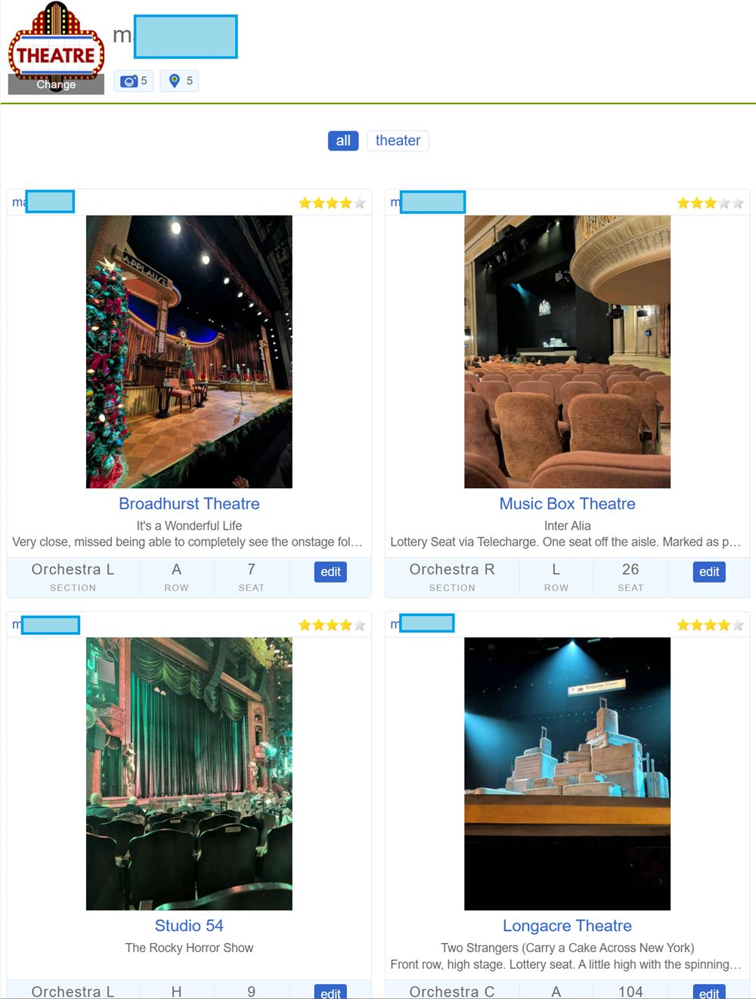
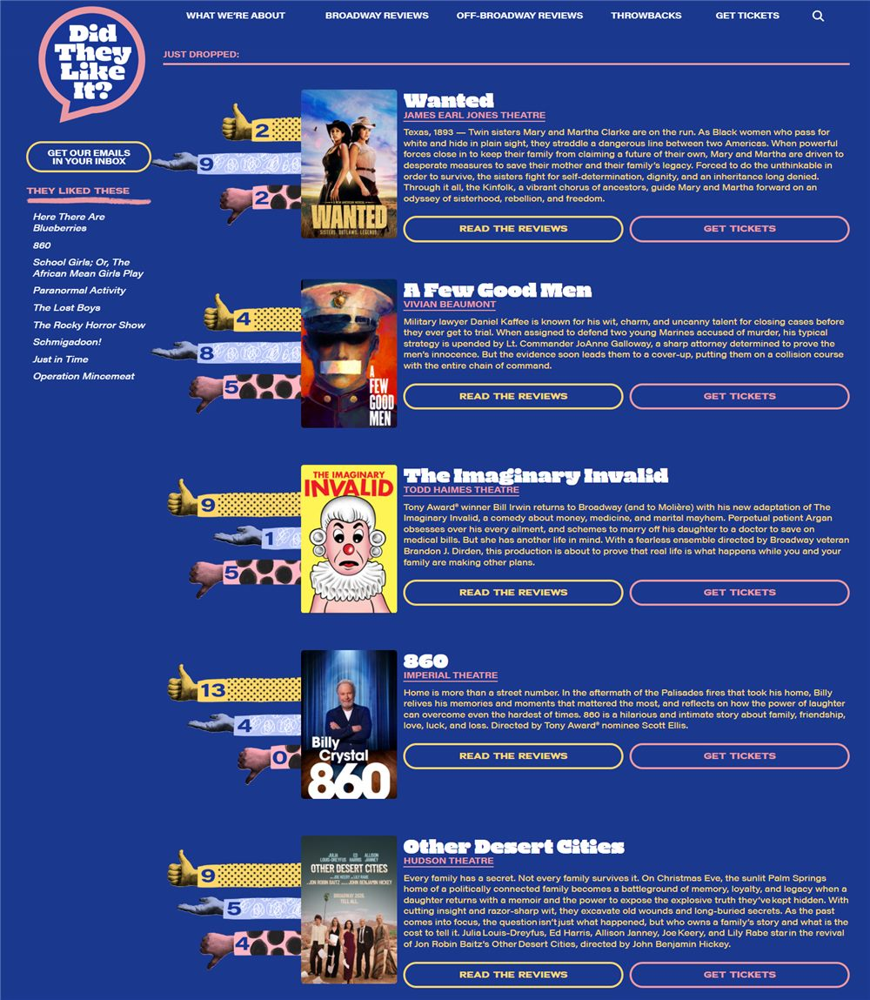
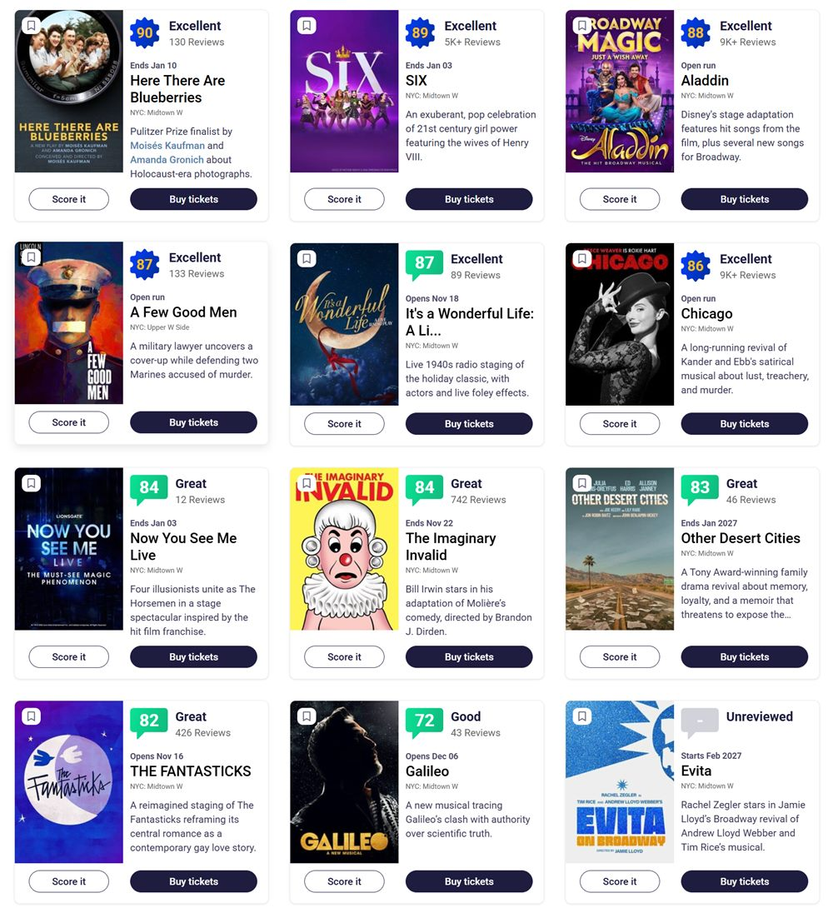

Maur Approved Websites & Apps
Where I check what's playing, what's discounted, and whether a seat is any good.
B'way Rush
- Great summary of what's playing and every discount option for each show.
- Also lists upcoming shows and closing dates (usually only about a month out).
Playbill
- All current Broadway shows with details and links to official ticket sellers.
r/Broadway
- Usually has a pinned discount megathread with codes from mailers.
See the megathread

A View From My Seat
- People post a photo of the stage from their seat with section, row, and seat number, plus a 1–5 rating and notes (partial view, legroom, aisle).
- Best for long-running shows like Hamilton, The Lion King, Wicked.
- Harder for new shows. A seat that was fine for Dear Evan Hansen at the Music Box could be partial view for Inter Alia (opened 11/11/2026).
See some of my seat photos

Did They Like It?
- Critic reviews summed up as thumbs up / on the fence / thumbs down after a show opens.
- Their staff assign the ratings, so a critic may not have literally said "thumbs down."
- Links to reviews and the official ticket site.
See the review tally

Show-Score
- Kind of like Rotten Tomatoes for theatre. A little inflated in my opinion.
See the scores

Apps I use
- TodayTix: lottery, rush, reminders
- Lucky Seat: easiest lottery
- Theatr: face-value resale
- Hamilton: its own lottery app
- Criterion: for HipTix